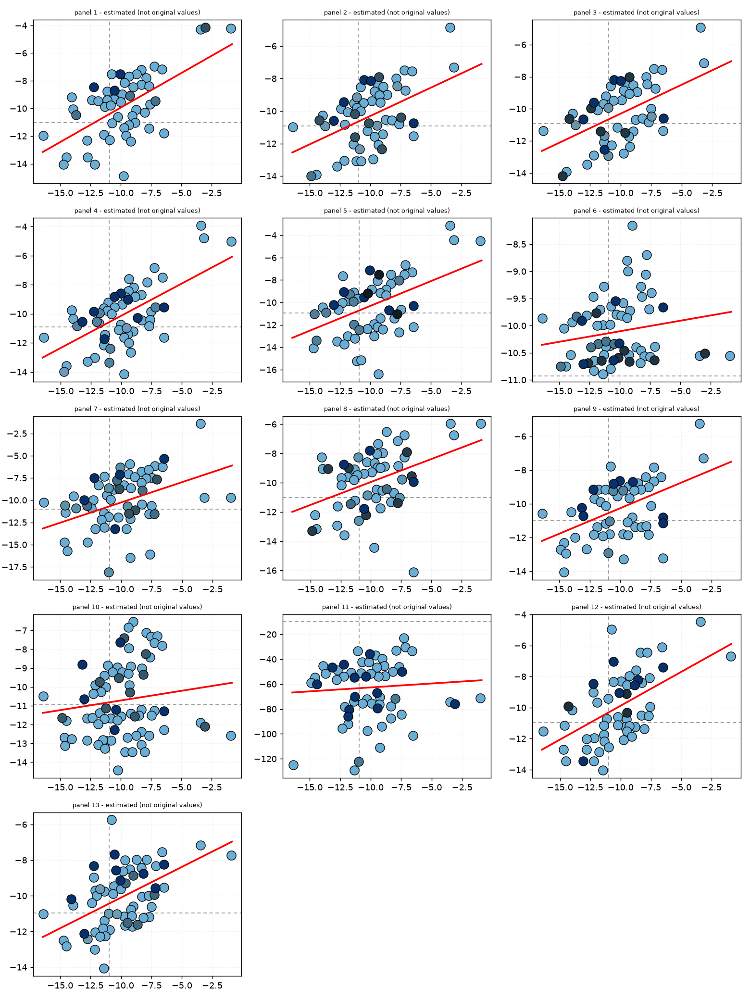
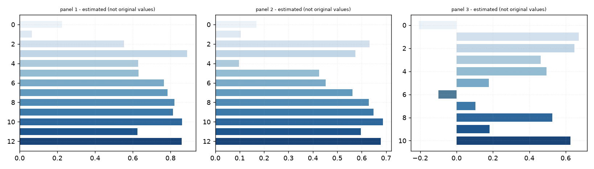
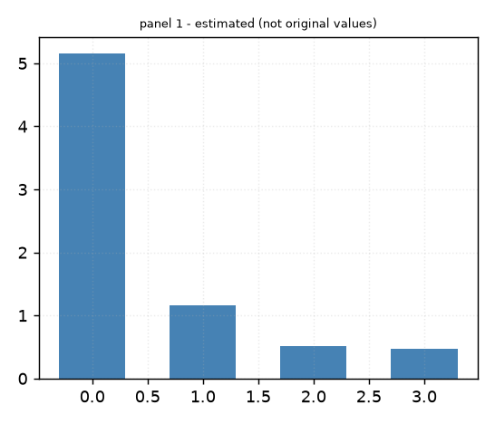
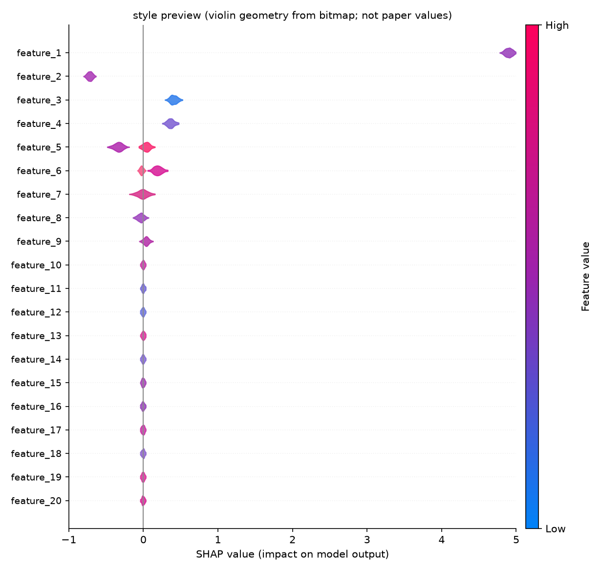

reproduce/repo/ 的仓库克隆未随示例分发；repo_manifest.json 保留了仓库 URL 与依赖信息，重新 git clone 即可复现。读法：每一步都写清了「做什么 / 怎么做 / 成功的标志 / 失败先查什么」。按顺序做完，第一次接触这个课题的人也能独立复现。
bash Estimating-Absolute-Protein-Protein-Binding-Free-Energi-5e8992ab/reproduce/repro_run.sh # Windows 下按脚本内注释逐条执行
| 类型 | ID | 说明 | 规模 | 角色 |
|---|---|---|---|---|
| figure | F1 | Schematic representation of the SL pipeline, which undergoes three steps. (A) The full tra | — | 讲解引用 |
| figure | F2 | PBEE flowchart for the protein-protein complex structure PDB ID 1XGU, corresponding to ant | — | 讲解引用 |
| figure | F3 | Regressions on the validation set using PRODIGY, Rosetta, and the trained ML and SL models | — | 讲解引用 |
| figure | F4 | Comparison of PBEE prediction accuracy by ML method to Rosetta and PRODIGY, for the three | — | 图表重绘 |
| figure | F5 | PBEE processing time as a function of the number of atoms | — | 讲解引用 |
| figure | F6 | Feature importance is based on SHAP-values. The violin | — | 讲解引用 |
| figure | E1_173 | — | 讲解引用 |
| 表 | 行数 | 列数 | 来源 | 数值列 | 截断 |
|---|---|---|---|---|---|
| 未抽取到表格数据 | |||||
| 仓库可用 | 是 |
|---|---|
| 仓库定位 | 已克隆自有仓库 |
| 候选仓库 | https://github.com/chavesejf/PBEE（own_code） |
| 本地代码目录 | — |
| 仓库数据文件 | — |
| 采集到的结果文件 | — |
| 复现脚本 | repro_run.sh |
| smoke 运行 | 运行失败：ModuleNotFoundError: No module named 'joblib' |
| 入口尝试 | pbee.py → failed |
| 依赖环境 | 未开启自动安装（仅生成脚本） |
| 状态 | 检查项 | 范围 | 说明 |
|---|---|---|---|
| 无可执行的校验项 | |||




从 PDF 中读取或识别的数值不等同于原文献数值（位图反推，仅供绘图对照）。只有坐标轴能读到 ≥2 个数值刻度、且单调、等距时才出数；读不出、对数轴、散点/蜂群过于密集的图不编造数值，但**样式（点径/描边/趋势线/渐变柱/colorbar）照原图复现**，并输出作图代码。柱状图的分类名（如 PDB ID、特征名）未做文字识别，按图中自上而下/从左到右编号。逐值附置信度，数据见各图目录下的 data.csv，同目录 draw_*.py、style.json 可用你自己的数据重画同款图。
| 图 | 状态 | 置信度 | 取值 / 说明 | 识别到的样式 | 图注 |
|---|---|---|---|---|---|
F1 | 跳过 | 未检测到坐标轴边框（示意图、流程图或纯图片，非可标定统计图） | Schematic representation of the SL pipeline, which undergoes three steps. (A) The full training set is used to train 10 | ||
F2 | 跳过 | 未找到该图的图片文件（PDF 里可能未提取出图资产） | PBEE flowchart for the protein-protein complex structure PDB ID 1XGU, corresponding to antibody (HyHEL-63) that binds to | ||
F3 | 已取数 | 0.45 | 面板 1（散点，53 个值）：(-3.03, -4.14)、(-0.913, -4.23)、(-3.41, -4.29)、(-7.21, -6.96)…；面板 2（散点，56 个值）：(-3.41, -4.85)、(-3.12, -7.31)、(-7.21, -7.48)、(-6.56, -7.53)…；面板 3（散点，52 个值）：(-3.48, -4.92)、(-3.19, -7.14)、(-7.29, -7.5)、(-6.59, -7.55)…；面板 4（散点，56 个值）：(-3.41, -3.92)、(-3.17, -4.77)、(-0.913, -5.03)、(-7.26, -6.85)…；……共 13 个面板，全部数值见 data.csv | 面板 1：点径 13.0px（约 3.7% 轴宽），描边 #020304，4 种填充色 #6aaed6、#45718c、#325063、#08306b，红色趋势线 y=0.499x-4.950，2 条灰色虚线参考线；面板 2：点径 13.0px（约 3.7% 轴宽），描边 #020405，5 种填充色 #6aaed6、#6b98b1、#46748e、#325264，红色趋势线 y=0.349x-6.819，2 条灰色虚线参考线；面板 3：点径 13.0px（约 3.7% 轴宽），描边 #020406，4 种填充色 #6aaed6、#6994aa、#203642、#08306b，红色趋势线 y=0.361x-6.697，2 条灰色虚线参考线 | Regressions on the validation set using PRODIGY, Rosetta, and the trained ML and SL models (RMSE: root-mean-square error |
F4 | 已取数 | 0.97 | 面板 1（横向柱，13 个值）：0.224、0.065、0.553、0.889、0.629、0.63…；面板 2（横向柱，13 个值）：0.169、0.104、0.632、0.574、0.097、0.426…；面板 3（横向柱，11 个值）：-0.207、0.673、0.648、0.462、0.495、0.178… | 面板 1：13 根柱渐变 #ebf2f8 → #184477（自上而下）；面板 2：13 根柱渐变 #ebf2f8 → #184477（自上而下）；面板 3：11 根柱渐变 #ebf2f8 → #184477（自上而下） | Comparison of PBEE prediction accuracy by ML method to Rosetta and PRODIGY, for the three protein-protein complex data s |
F5 | 已取数 | 0.97 | 面板 1（柱状，4 个值）：5.15、1.16、0.518、0.478 | 面板 1：4 根柱同色 #4682b4 | PBEE processing time as a function of the number of atoms |
F6 | 仅样式（代码+配色） | 蜂群图无法逐点还原数值；本条目复现原图的布局、小提琴轮廓与配色 | 图表类型 beeswarm（纵向蜂群/小提琴）；colorbar 配色 #fe005c → #9c23ad → #0083f8（High→Low）；作图代码 draw_F6.py（数值不取，不编造） | Feature importance is based on SHAP-values. The violin | |
E1_173 | 跳过 | 检测到 1 个边框，但均未能标定：刻度线不足 2 个 |
完整说明书见同目录 TECH_GUIDE.md。以下为**确定性抽取**结果（正则 + 章节结构），每条都附正文出处；官方链接为登记值，与论文引用不一致时以论文为准。
这些阶段名取自段首的小节标题（作者用的「标题式短语 + 句号」写法），顺序按正文出现次序；个别阶段可能被拆到别的段落里，请回原文核对完整性。
| 资源 | 官方入口 | 正文出处 |
|---|---|---|
| PDBbind | http://www.pdbbind.org.cn/ | PDBbind,27 (ii) PRODIGY,18 (iii) SKEMPI2,28 and (iv) |
| Docking Benchmark (5.5) | https://zlab.umassmed.edu/benchmark/ | protein-protein docking benchmark version 5 |
| SKEMPI / SKEMPI2 | https://life.bsc.es/pid/skempi2 | PDBbind,27 (ii) PRODIGY,18 (iii) SKEMPI2,28 and (iv) |
| PRODIGY | https://wenmr.science.uu.nl/prodigy/ | PDBbind,27 (ii) PRODIGY,18 (iii) SKEMPI2,28 and (iv) |
结构分辨率门槛：**晶体结构质量门槛**：分辨率数值越小、电子密度越清楚。用它筛掉低质量结构，是 X 射线结构数据集的标准做法；换数据源时必须沿用同一门槛，否则不可比。
论文原句：gaps or missing heavy atoms and with a maximum resolution of
2.5 Å（出处：METHODS）
去冗余：在相似结构/复合物之间只保留一条，防止数据泄漏。
论文原句：Size of Nonredundant Data Set of Protein-Protein（出处：METHODS）
实验结构类型限制：只取**实验解析**的晶体结构（区别于 NMR、冷冻电镜与预测模型），决定了数据可获取性与误差量级。
论文原句：We have initially selected 603 X-ray resolved（出处：METHODS）